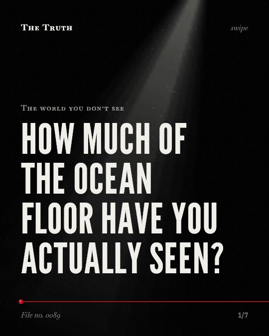

The world you don’t see
How much of the ocean floor have you actually seen?

You have seen less than 0.001% of the deep seafloor.
The area we have visually observed is approximately a tenth of the size of Belgium. Most of the rest remains unseen.
Established. Several studies combined, or official data. The evidence backs this.
What the research found
We have visually observed less than 0.001% of the deep seafloor, which is an area approximately a tenth of the size of Belgium.
“we have visually observed less than 0.001%, a total area approximately a tenth of the size of Belgium.”
Study, 2025. Bell et al., Science advances.
Sixty-five percent of all in situ visual seafloor observations in the dataset were within 200 nm of only three countries: the United States, Japan, and New Zealand.
“Sixty-five percent of all in situ visual seafloor observations in our dataset were within 200 nm of only three countries: the United States, Japan, and New Zealand.”
Study, 2025. Bell et al., Science advances.
Ninety-seven percent of all dives compiled have been conducted by just five countries: the United States, Japan, New Zealand, France, and Germany.
“Ninety-seven percent of all dives we compiled have been conducted by just five countries: the United States, Japan, New Zealand, France, and Germany.”
Study, 2025. Bell et al., Science advances.
With the current average rate of new map generation of ∼3.2% of total seafloor area annually, the global seafloor could be mapped in approximately 20 years.
“With the current average rate of new map generation of ∼3.2% of total seafloor area annually, we predict that the global seafloor could be mapped in approximately 20 years.”
Study, 2025. Niyazi et al., Frontiers in Marine Science.
Over 14% of the ocean fell under the category of globally important marine areas and most of this area (88%) is not yet protected.
“Over 14% of the ocean fell under this category and most of this area (88%) is not yet protected.”
Meta-analysis, 2019. Gownaris et al., Frontiers in Marine Science.
Observation is concentrated in five countries.
Ninety-seven percent of all deep-sea dives are conducted by the United States, Japan, New Zealand, France, and Germany. This creates a heavy geographical bias in what we know.
Our map of the world is incomplete.
That may be why our understanding of the planet is shaped by a few specific nations. We are looking at a tiny window of the total ocean.
This part is our reading of the evidence, not a finding.
You look at a map on a screen.
You see a blue expanse and assume the world is charted. You do not see the parts that remain blank and unvisited.
The honest summary
The evidence confirms that direct visual observation of the deep seafloor is extremely limited and heavily skewed toward specific nations.
The data highlights a significant geographical bias in observation rather than a total lack of mapping effort in all regions.
What exists in the parts we refuse to look at?
Sources
- Natasha J. Gownaris, Christine Santora, John B. Davis et al. (2019). Gaps in Protection of Important Ocean Areas: A Spatial Meta-Analysis of Ten Global Mapping Initiatives. Frontiers in Marine Science. Meta-analysis, cited 36 times.
- Yakufu Niyazi, Elin A. Thomas, Nicolas Pucino et al. (2025). Status of global seafloor mapping effort and priority areas for future mapping. Frontiers in Marine Science. Study, cited 16 times.
- Bell KLC, Johannes KN, Kennedy BRC, Poulton SE (2025). How little we've seen: A visual coverage estimate of the deep seafloor. Science advances. Study, cited 48 times.
Also read for this file, not quoted
- Bongiorno et al. (2017). Coregistered Hyperspectral and Stereo Image Seafloor Mapping from an Autonomous Underwater Vehicle.
- Sigiel et al. (2025). AI Supported Coverage Path Planning Algorithms for Seafloor Mapping.
- Esteban et al. (2025). A Systematic Review of Marine Habitat Mapping in the Central-Eastern Atlantic Archipelagos: Methodologies, Current Trends, and Knowledge Gaps.
This file was researched and drafted by software, then checked by rules a model cannot talk its way around: each quote above was matched word for word against the paper, and every number had to appear in it. How files are made.